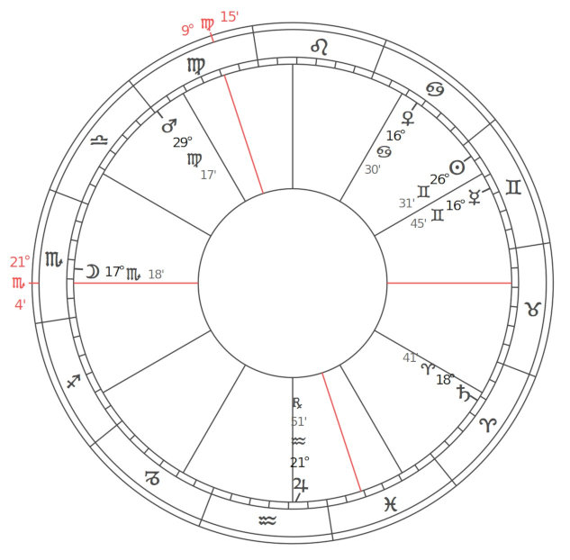
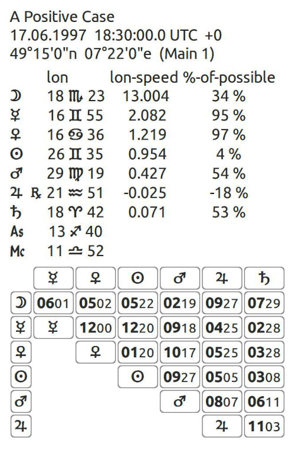

A Case Study in Hermetic Astrology
An example chart to show Hermetic Astrology in all of its facets.


|
Sun in Gemini You love to investigate, search, and explore. You are especially communicative – talking, writing, broadcasting... even by car. Always going beyond conventions into whatever's new, exciting, and spicy, you are happy when caught up in the variety and complexity of life. Sun in 8th House What you see is what you get is not enough for you. You want more than appearances and are willing to dig down to get at the heart of things. You work through all that is superficial, no matter what kind of personal sacrifice is required. Moon in Scorpio Yours is a passionate life. Intense feelings and strong attachments make for hot times, and you are fiercely loyal, if not sometimes possessive. Secretive, you are not at all superficial but always get to the heart of things. This is good for business and politics. You have a sense for power, wealth, and passion. Moon in 12th House Psychology – in particular group work – is one area that you can always look to for support and encouragement. You may find yourself counselling or ministering to others, helping them to understand and accept your lives. Mercury in Gemini Yours is a lightning wit. You somehow know everything about everybody. Curious, you love finding things out – speculating, investigating. You are clever but not known for your deep thinking, and any and all kinds of communication satisfy. You are always exploring, testing. Debates, games, and puzzles please you. Quick. Mercury in 7th House You love to communicate and discuss ideas with other people. Your ideas are always fair and impartial, especially when it comes to other people, the social scene. You are at your mental best when you are communicating with others. Venus in Cancer Homeward bound! With you, the domestic scene is ideal. Marriage, children, animals, gardens – the whole works. You like to feel secure. Sensitive too. You are dependent on others and like to be taken care of, even mothered. You love music, can be emotional, and tend to be protective. Venus in 8th House You don't care much for the superficial. You appreciate getting past the surface and down to the heart the bare bones of the matter. This could make you a shrewd and discriminating business person. You value passion in a relationship. Mars in Virgo You have an innate urge to save, salvage and conserve, and can make a silk purse from a sow's ear. You always want to help and to be of service – be fully used. You hate waste and are thorough and precise. For the most part, you are understanding and accepting, but this can turn into criticism and pettiness. You are careful and a perfectionist. Mars in 10th House You are driven to manage and control things. An urge to organise and be practical amounts to a minor obsession. Your career motivation is constant and relentless. Jupiter in Aquarius A true progressive, especially in community or group work, you are democratic to the point of being radical – an idealist. You are cool and impersonal when it comes to being fair or just, with a great interest in new trends and world affairs. You are future oriented. Application minded. Jupiter in 3rd House A born investigator and researcher, always inquiring, searching, following things to your logical conclusion. Your career will probably be built around these qualities of yours – communication, making connections, thoughts and ideas, and so on. Saturn in Aries Your destiny is to formulate a new identity. You feel vulnerable because you have no instinctive ego to serve as a buffer against environmental stimuli. Thus, there is a tendency either to over or under react when asserting yourself, because you don't have a solid sense of self to assert from. Your goal is to formulate a new, more powerful sense of identity. Saturn in 5th House You find it difficult to let go, emote, and express your feelings, and tend to be cautious and restrained. Feeling creative may be difficult, for you are hard on yourself in this area. You may have approach/avoidance reactions with children, animals. Uranus in Aquarius You have a radical approach to communities and group work. Progressive, with insights into uniting humanity, you understand the true meaning of democracy. You want equal rights for all, and function from an inspired sense of idealism, the urge to make it matter. You would make a great networker and are always working for the benefit of all. Uranus in 3rd House You have real insight when it comes to anything connected to research, study, and the world of ideas. Your independent mental approach to problem solving and communication finds you coming up with connections that are new and different. Neptune in Capricorn The practical is the ideal. Form follows function. You have a dream of being in control – the puppetmaster. You are interested in tradition and tend to be dignified and conservative. You believe in an orderly society led by benevolent monarchs – those who can see what to do. Neptune in 2nd House You are idealistic when it comes to possessions, finance, and how you choose to make your living. Your response to what life offers is always elevated, although not always practical, leading to possible disappointment. Pluto in Sagittarius You are passionate in your search for truth and essence. Nothing superficial or ephemeral holds your attention. Your intense analytical approach to life cuts through to the heart of things. This directness may not always endear you to others. Pluto in 1st House You are out front and candid, probably not known for your great sense of diplomacy or tact. Your intensity and passionate approach to life are obvious to all who meet you. You are driven to penetrate the superficial and get at the essential. North Lunar Node in Virgo, South Node in Pisces. Escapism, daydreaming and fantasies attract, you may retreat into an ideal and perfect inner world where all is good. There is a conflict between illusions and external reality, reflecting the interplay between the Virgoan dream of perfection and the Piscean dream of idealism. A misapplication of these could impair your ability to deal with the real world. Alternatively, You could have brought creative talents with you from past lives. North Lunar Node in 10th House, South Node in 4th House. Untangle yourself from domestic and parental traps. Involve yourself in your community instead of staying home all the time. Develop a more positive outlook. Make contact with people outside your family milieu. Go out to work, even if it's only part time or volunteer work. Chiron in 11th House Seeking appropriate ideals. Ceres in 4th House Your role as a parent is the foundation your life. In a universal sign this may manifest as mother to the world or whoever comes into the home. When Ceres is near the IC, the mythos of Ceres is especially predominant as a psychological foundation – an emotional connection with the themes of loss and return of loved ones or of rejection and acceptance. Pallas in 3rd House You seek practical use of your mind. You are eternally optimistic and like to talk about your work. Many of you teach or are in the communications field, they want people around you at all times. You to thrive on a variety of contacts. Juno in 8th House You thrive on the intensity of experiences in your relationships. Partners may put each other through continual changes and transformations. The most important relationship interactions will concern mutual finances and possessions, as well as the issues of trust, power and sexuality. Vesta in 5th House Suggesting a dedication to your personal creative expressions, either your children or other artistic forms. Part of Fortune in 4th House Communication through relationships will bring the greatest fulfilment. You seek to be understood by others with great earnestness. Language and the use of words are important, you try to understand how others think and see developing a greater perspective in your own thinking. There is a constant quest to refine the perceptions and great joy in teaching others how to do the same. You love to share ideas – it gives a sense of growth and security. You learn to understand that society needs your ideas and the better your can express ideas in a purely impersonal way, the more acceptance you will earn. Scorpio Ascendant A Scorpio Ascendant endows you with strong will power, ambition, physical energy, passion, determination and deep emotions. Brave, ingenious, resourceful, self reliant and courageous you do not shrink from controversy or dispute if it is thrust upon you – nor do you shirk responsibility. You have strong likes and dislikes towards both persons and ideas, and you do not easily change your opinions or habits of life. You have much strength of will, and although feelings, emotions, and passions sometimes sway you intensely, you have great endurance and persistence and you can work hard and long to achieve your ends. You are a good fighter when the defensive, critical, sarcastic or analytical side of your nature is activated. At times, you can be too blunt and forceful with those who differ with you, creating unnecessary enmity and friction. You tend to look after your friends and go out of your way to help those in need, although, on occasion you can be very rude. You also have a predisposition to jealousy. You may, at some stage, develop a taste for mystical or occult subjects. Qualities lacking to some degree, which may be found in your partner are efficiency in practical matters and diplomacy. 2nd House Cusp in Sagittarius Generally, you have good luck in financial matters and know how to make money multiply. You expand your activities through money, and there are usually adequate financial resources to further your ends. You often provide financial support for religious and educational institutions. Sometimes you are economic theorists. 3rd House Cusp in Aquarius You are progressive in thought, insisting that ideas have a practical function based on values that have stood the test of time. You think in humanitarian terms. Unusual and peculiar relationships exist with brothers, sisters and neighbors. 4th House Cusp in Pisces Your home is often places of retreat, set aside for retrospection. Sometimes your house is provided by institutions; you may live in rectories, ashrams, university provided housing, etc. At any rate, you enjoy privacy in your home. 5th House Cusp in Aries You expend much energy in creative activity. You originate numerous concepts. In the realm of love and romance, you are passionate and aggressive. You like sports, especially combat such as boxing, wrestling, and football. You are dominating in your relationships with children, yet at the same time you may be generous. 6th House Cusp in Taurus Your work is practical, but you enjoy projects you consider beautiful and artistic. You will work hard only if you can see a monetary gain from your efforts. Your health is generally robust, providing you do not overeat or become self indulgent in any way. Taurus Descendant You attract marriage partners who have wealth to offer. You are cooperative in partnerships but expect some practical gain as a result. You spend money on lovely things that have quality. You also spend money on your partners and take great pride in the fact that you look well. 8th House Cusp in Gemini You are pregnant with ideas concerning joint finances. You are often occupied with thoughts and communications concerning death and the affairs of the dead. You are intellectually interested in mystery. 9th House Cusp in Leo You may not want fame, but your subconscious minds as well as your philosophy are somehow geared to attaining it and to achieving positions of importance in your respective fields of endeavor. You take long journeys, either physically or mentally. Your eyes are always on distant goals. Virgo Midheaven This placing indicates that in order to succeed in your social position in the world you will have to gain knowledge and expertise associated with the correct attitude to work, employers, employees, and co workers. Life experience will force you to learn valuable lessons related to the development of a sound business sense and a well structured, accurate, precise, practical and efficient way of working. You are intensely interested in money, and it is your primary consideration in whatever field you choose for your life's work. Your profession could be in science, engineering or other fields requiring detailed skill and precision. Virgo is the sign of service, and many with this placing are found in the medical profession or other health related work. 11th House Cusp in Libra You often obtain your goals by surrounding yourself with unusual, attractive, artistic, and gracious friends who are stable and prosperous. You are likely to marry a friend, a partner's friend, or a friend of long standing. 12th House Cusp in Scorpio Your hidden support is your resourcefulness. You are able to perceive as valuable things that others have overlooked. You also know how to cultivate hidden talents in others. Your downfall can be caused by secret resentments and concealed love affairs. Sun Square Mars You push hard, but much energy is wasted because you tend to lack direction and planning. You often work against the way things are: authorities or the status quo. It may be difficult for you to coordinate your ambitions with your actual actions and feelings. You tend to hobble yourself emotionally. Your drive and passions put you at odds with authority figures time and again. This tendency towards clashes and emotional confrontation does exist, and at these times you can be your own worst enemy. Moon Trine Venus You have a natural appreciation for the past, personal as well as world history – all that is traditional. You find it easy to work with music, color, fabric, and the arts – whatever is beautiful and genial. You would make a superb decorator of homes and, in general, all kinds of environments. You enjoy moods and emotions (whatever is psychological), especially in a group setting. Younger people, the helpless, and the needy can always be found under your umbrella. Moon Square Jupiter The path or career that you take may go against tradition and thus sometimes be a lonely one. Don't expect much support from those around you. There is also some danger you could overextend, making decisions that go against your own better feelings and instincts. Career choices could be at the expense of home and surroundings. Your approach to solving problems may get you in hot water with others, resulting in frequent debates, if not out and out arguments. Mercury Semisextile Venus Lovely words and a flair for description – the artistic in all its many forms. An inner sense of warmth and goodness, and the ability to express this. Kind and easy to be with. Perfect taste in literary and artistic matters. Harmonious. Mercury Sextile Saturn A real problem solver, the more tedious the better. Able to reduce any subject matter to the bare bones. Heavy duty thinker. Could be very serious or philosophical. Enjoy study and thought. Very methodical and practical in approach. Venus Square Saturn You have trouble accepting responsibilities. You don't like them. You would rather enjoy yourself at the expense of any obligations, letting them accumulate as they will. This struggle with authority and simple duty makes for great tension and diminished good times. It is hard to have fun when you are ignoring your responsibilities. What we have here is a stalemate. Mars Trine Neptune You have an ability to work with the imagination, reaching beyond the mundane to the potential beyond. Your enthusiasm for mystical and religious experience makes you an excellent teacher in artistic and creative matters. Your sense of the unity behind things spiritual and psychological is clear and felt by those around you. You are, no doubt, a romantic, at home in the world of dreams and images. You enjoy working in these areas. Jupiter Sextile Saturn You possess an architect's vision for what needs to be done and how to do it right to make it last – an expert or true builder. Knowing what tool to use and just how and when to use it. A sense of the right path or dharma. With you, the means and ends are identical. Saturn Sesquiquadrate Pluto Power struggles may occur, in particular between your sense of responsibility and an urge to transform yourself utterly. Your more orderly self tends to ignore signs of change until they erupt as major upheavals. An ongoing cycle. |
About
Hi, my name is Rod Schneider and I have created this website to illustrate how, with the help of astrology, that negativity can be converted into something more positive. The astrology being shown here is rooted in the most ancient inceptions derived from Hermetism. It is technical but in the hands of a practioner already familiar with astrology has great potential to be helpful. There is also much help for non-astrologers to use astrology in a different manner, namely with cycles and phases.Comments and contributions are always welcome.
Contact: rodschneider35@gmail.com